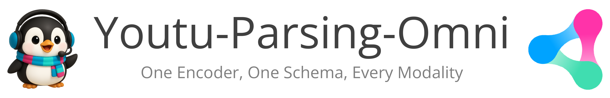
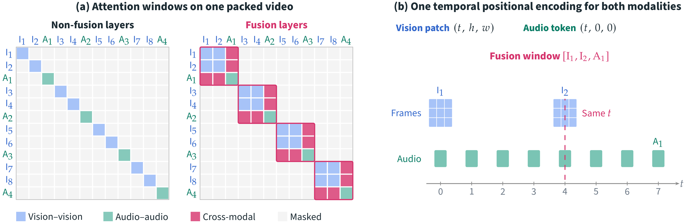

<b>One model that parses documents, images, charts, geometry, audio and video into structured JSON</b>
📄 License • 📑 Technical Report • 🚀 Quick Start • 📊 Results • 📚 Citation
News
- [2026-10] OmniDocBench evaluation code released (see OmniDocBench Evaluation).
- [2026-10] Technical report, model weights, vLLM plugin and inference examples released.
Introduction
Youtu-Parsing-Omni is a compact (5B) omni-modal parsing model. Given a single input — a document page, a natural image, a chart / flowchart, a geometry figure, an audio clip or an audio-visual video — it produces one structured JSON envelope that covers both perception (layout elements, text, tables, formulas, bounding boxes, timestamps, ASR, OCR, acoustic events, camera motion) and cognition (captions, narratives, reports). The output family is selected by the task prompt (--task in the examples, keys of prompts/youtu_parsing_omni.json).
| Input | --task | modality / subtype | Key contents |
|---|---|---|---|
| Document page | document | image / document | layout elements with bbox, text / LaTeX / OTSL tables / Markdown charts / Mermaid flowcharts, reading order |
| Natural image | natural_image | image / natural_image | entities and text with bbox, tags, captions, global description |
| Chart | graphics_chart | image / document | one chart element: Markdown table, notes, caption |
| Flowchart | graphics_flowchart | image / document | one flowchart element: Mermaid, caption |
| Geometry figure | graphics_geometric | image / document | one geometric element: points, lines, arcs, shapes, geometric relations and measurements |
| Audio | audio | audio / – | vocal / non-vocal segments with timestamps, speakers, ASR, timbre / scene captions, acoustic events |
| Natural video | natural_video | video / natural_video | temporal segments with visual elements, actions, interactions, camera motion, audio track |
| Text-rich video | textrich_video | video / text_rich_video | segments with OCR + ASR and a Markdown structured_report of the whole video |
Highlights (see the technical report for details):
- Unified schema – one JSON envelope for seven parsing families, driven by the task prompt.
- Omni encoder – image, audio and interleaved audio-visual video inputs (frames + audio track) in a single model.
- Strong results at a small size – state-of-the-art on OmniDocBench v1.6 (96.96 Overall), best open-weight model on OmniParsingBench (75.08 Avg., second only to Gemini-3-Pro), and competitive with specialized models on chemical-structure (ChemOCR) and music-score (PDMX-Synth) recognition (results).
- Easy to serve – a vLLM plugin, pinned serving settings, task prompts and inference examples are included.
Method
One encoder for every modality

Existing omni-modal parsers (a) encode pixels and audio with two separately pre-trained towers whose streams first meet inside the language model. Youtu-Parsing-Omni (b) replaces both towers with a single Youtu-Omni-Encoder, initialized from a pre-trained text language model to strengthen text reading. Thin modality-specific stems map pixels and log-mel frames to tokens; a shared bidirectional Transformer contextualizes an arbitrary packed mix of images, audio chunks and videos under one (t, h, w) positional encoding; modality-specific mergers and projectors then feed the tokens, together with the text prompt, to the Youtu-LLM decoder, which emits OmniSchema JSON. Only the stems and the merger / projector heads depend on the modality, so almost all perception parameters are shared.
Audio-visual fusion inside perception

The frames and audio chunks of a video are packed in temporal order. (a) A non-fusion layer gives every frame and every audio chunk its own attention window, while a few fusion layers start a new window at every audio-to-frame boundary, so a frame attends to the sound of the same instant. (b) Vision tokens take t from the frame index and (h, w) from the patch grid; audio tokens take t from their time offset with h = w = 0, so both modalities share one temporal coordinate system. Cross-modal alignment is thus computed inside the encoder rather than reconstructed by the decoder.
One schema for every task: OmniSchema-Aware On-Policy Distillation (OSAD)

All ten parsing tasks share OmniSchema, so after SFT and schema-routed RLVR a single self-evolving post-training procedure, OSAD, applies the same token-role-based objective across tasks. The student samples its own parses; rollouts that pass the admission gate (JSON validity, schema conformance, box syntax, repetition checks) are scored by a frozen copy of the model that additionally sees the reference parse. Because every output follows OmniSchema, each token is identified as content (Jensen–Shannon divergence) or structure (forward KL at a higher temperature), plus an all-token JS term. At every round boundary the student's LoRA adapters are merged and the student becomes the next teacher, so the parser and its supervision co-evolve without a hand-designed reward or a separately trained teacher.
Model Zoo
| Model | Parameters | Download | |
|---|---|---|---|
| Youtu-Parsing-Omni | 5B | 🤗Hugging Face \ | 🤖ModelScope |
Results
OmniDocBench v1.6
| Model | Params | Overall ↑ | Text Edit ↓ | Formula CDM ↑ | Table TEDS ↑ | Table TEDS-S ↑ | Reading Order Edit ↓ |
|---|---|---|---|---|---|---|---|
| Youtu-Parsing-Omni | 5B | 96.96 | 0.0271 | 96.80 | 96.79 | 98.20 | 0.1104 |
| TeleOCR | 1.2B | 96.91 | 0.0267 | 96.59 | 96.82 | 98.18 | 0.1184 |
| OvisOCR2 | 0.8B | 96.47 | 0.0265 | 97.49 | 94.58 | 96.98 | 0.1120 |
| PaddleOCR-VL-1.6 | 0.9B | 96.34 | 0.0326 | 97.53 | 94.76 | 97.10 | 0.1278 |
| MinerU2.5-Pro | 1.2B | 95.75 | 0.0360 | 97.45 | 93.42 | 95.92 | 0.1200 |
| GLM-OCR | 0.9B | 95.22 | 0.0440 | 97.18 | 92.83 | 95.39 | 0.1330 |
| HunyuanOCR-1.5 | 1B | 94.74 | 0.0390 | 94.50 | 93.67 | 94.71 | 0.1290 |
| Qianfan-OCR | 4B | 93.90 | 0.0400 | 95.08 | 90.53 | 93.31 | 0.1300 |
| Youtu-Parsing | 2.5B | 93.74 | 0.0440 | 93.63 | 92.02 | 95.00 | 0.1160 |
| Ovis2.6-30B-A3B | 30B-A3B | 93.70 | 0.0350 | 95.17 | 89.44 | 92.40 | 0.1350 |
| Logics-Parsing-v2 | 4B | 93.33 | 0.0410 | 95.65 | 88.42 | 91.98 | 0.1370 |
| FireRed-OCR | 2B | 93.26 | 0.0370 | 95.44 | 88.04 | 91.06 | 0.1310 |
| Gemini-3-Pro | – | 92.91 | 0.0640 | 95.99 | 89.15 | 92.96 | 0.1650 |
| dots.ocr | 3B | 90.77 | 0.0480 | 89.95 | 87.18 | 90.58 | 0.1380 |
| OpenDoc-0.1B | 0.1B | 90.67 | 0.0490 | 93.02 | 83.88 | 87.45 | 0.1400 |
| DeepSeek-OCR 2 | 3B | 90.25 | 0.0500 | 91.84 | 83.89 | 87.75 | 0.1440 |
| Qwen3-VL-235B | 235B-A22B | 89.78 | 0.0630 | 92.55 | 83.07 | 86.75 | 0.1660 |
| Dolphin-v2 | 3B | 89.50 | 0.0690 | 91.01 | 84.40 | 87.44 | 0.1500 |
| OCRVerse | 4B | 88.60 | 0.0630 | 89.61 | 82.44 | 86.27 | 0.1630 |
| MonkeyOCR-pro-3B | 3B | 88.57 | 0.0740 | 88.74 | 84.35 | 88.62 | 0.1890 |
| GPT-5.2 | – | 86.59 | 0.1140 | 88.21 | 82.95 | 87.93 | 0.1930 |
OmniParsingBench
| Model | Chart | Geometry | Natural Image | Audio | Natural Video | Text-rich Video | Avg. |
|---|---|---|---|---|---|---|---|
| Gemini-3-Pro | 92.79 | 85.43 | 69.73 | 76.74 | 74.82 | 76.80 | 77.44 |
| Youtu-Parsing-Omni | 95.02 | 74.33 | 62.84 | 78.08 | 74.18 | 75.62 | 75.08 |
| Logics-Parsing-Omni | 94.65 | 76.34 | 67.53 | 75.58 | 67.34 | 65.36 | 72.26 |
| Qwen3-Omni-30B-A3B | 87.07 | 58.60 | 59.35 | 75.23 | 65.19 | 59.59 | 66.44 |
| Qwen3.5-397B-A17B | 93.51 | 72.16 | 63.87 | – | – | – | – |
| GPT-5.4 | 90.92 | 81.16 | 60.50 | – | – | – | – |
ChemOCR & PDMX-Synth
ChemOCR
| Model | Params | Category | Avg. Sim. ↑ | Tani@1.0 ↑ |
|---|---|---|---|---|
| DeepSeek-OCR 2 | 3B | General parsing MLLM | 74.9 | 49.6 |
| Youtu-Parsing-Omni | 5B | Unified parsing MLLM | 74.6 | 54.2 |
| ChemDFM-X | 13B | Chemistry MLLM | 70.9 | 36.5 |
| GPT-4o | – | Proprietary general MLLM | 36.8 | 3.4 |
| Qwen2.5-VL-7B | 7B | Open-source general MLLM | 25.5 | 0.4 |
| InternVL2.5-4B | 4B | Open-source general MLLM | 4.4 | 0.0 |
PDMX-Synth
| Model | Category | CER ↓ | SER ↓ | LER ↓ |
|---|---|---|---|---|
| Youtu-Parsing-Omni | Unified parsing MLLM | 22.73 | 26.73 | 33.20 |
| LEGATO | Specialized OMR model | 23.30 | 25.80 | 31.70 |
| GPT-5.6 | Proprietary general MLLM | 45.02 | 54.74 | 87.52 |
| Gemini-3-Pro | Proprietary general MLLM | 54.26 | 68.10 | 82.33 |
| Logics-Parsing-Omni | General parsing MLLM | 72.44 | 81.93 | 81.34 |
| GOT-OCR2.0 | General parsing MLLM | 93.98 | 98.54 | 97.76 |
Quick Start
1. Installation
bashgit clone https://github.com/TencentCloudADP/youtu-parsing.git cd youtu-parsing/youtu_parsing_omni # choose one mode per Python environment (Python >= 3.10, CUDA GPUs for inference) bash scripts/setup_env.sh # vLLM serving + plugin (transformers==5.2.0) bash scripts/setup_env.sh --transformers # Transformers inference (transformers==5.10.2)
- vLLM serving and Transformers inference pin different
transformersversions
(5.2.0 and 5.10.2); install them into separate Python environments. peft must not be installed in the serving environment (the script removes it).
ffmpegmust be available for audio / video inputs.
Manual installation
bash# serving (vllm==0.19.0, transformers==5.2.0) pip install -r requirements/vllm.txt pip install transformers==5.2.0 # overrides vllm's transformers<5 pin pip uninstall -y peft pip install --no-deps ./vllm-plugin-vita-omni # Transformers inference (separate env, transformers==5.10.2) pip install -r requirements/transformers.txt
2. Serve with vLLM
bashMODEL=tencent/Youtu-Parsing-Omni DATA_ROOT=/path/to/media GPU=0 bash scripts/vllm.sh
This starts an OpenAI-compatible server on http://127.0.0.1:8000/v1 (served model name Youtu-Parsing-Omni) with the vllm-plugin-vita-omni model implementation and the runtime settings of the reported results.
| Variable | Default | Meaning |
|---|---|---|
MODEL | required | Hugging Face model id (tencent/Youtu-Parsing-Omni) or a local checkpoint directory |
DATA_ROOT | required | the only directory the server may read local media from (--allowed-local-media-path) |
GPU | 0 | GPU the server runs on (CUDA_VISIBLE_DEVICES) |
PORT | 8000 | port of the server |
- Engine settings:
--max-model-len 65536 --max-num-batched-tokens 65536 --max-num-seqs 1,
--gpu-memory-utilization 0.70, --limit-mm-per-prompt '{"image": 8, "video": 4, "audio": 8}', --seed 1234, bfloat16; vLLM defaults for everything else.
- The server listens on
127.0.0.1only and runs in the foreground (logs go to the terminal);
Ctrl-C stops it. vLLM's internal port is 30000 (override with VLLM_PORT).
- The script also exports the media token budgets read by the plugin
(YOUTU_VITA_*, see vllm-plugin-vita-omni).
MODELis passed tovllm serveas is:tencent/Youtu-Parsing-Omniis downloaded from the
Hugging Face Hub (cached in HF_HOME); a local checkpoint directory works as well.
3. Parse a file
The media file must lie below DATA_ROOT.
bashpython examples/infer_vllm.py --task document --media /path/to/media/page.png python examples/infer_vllm.py --task natural_image --media /path/to/media/photo.jpg python examples/infer_vllm.py --task graphics_chart --media /path/to/media/chart.png python examples/infer_vllm.py --task graphics_flowchart --media /path/to/media/flowchart.png python examples/infer_vllm.py --task graphics_geometric --media /path/to/media/geometry.png python examples/infer_vllm.py --task audio --media /path/to/media/speech.wav python examples/infer_vllm.py --task natural_video --media /path/to/media/clip.mp4 python examples/infer_vllm.py --task textrich_video --media /path/to/media/lecture.mp4
Use --api-base to target another server. The task prompts are listed in prompts/youtu_parsing_omni.json. Requests must put the media before the text and enable the parsing mode of the chat template shipped with the model (chat_template_kwargs = {"enable_thinking": false, "enable_parsing": true}), which renders the media token directly followed by the prompt, without role markers. As in the reported results, decoding is greedy, stops at <|image_pad|> / <|end_of_text|> (stop_token_ids, looked up through the server's /tokenize endpoint) and keeps special tokens, which carry the coordinates.
Raw OpenAI API request
pythonimport requests from openai import OpenAI # token ids of <|image_pad|> and <|end_of_text|> stop_token_ids = sorted(requests.post("http://127.0.0.1:8000/tokenize", timeout=60, json={ "model": "Youtu-Parsing-Omni", "prompt": "<|image_pad|><|end_of_text|>", "add_special_tokens": False}).json()["tokens"]) client = OpenAI(base_url="http://127.0.0.1:8000/v1", api_key="EMPTY") prompt = "Please perform end-to-end document parsing on the provided image. ..." # see prompts json response = client.chat.completions.create( model="Youtu-Parsing-Omni", messages=[{"role": "user", "content": [ {"type": "image_url", "image_url": {"url": "file:///path/to/media/page.png"}}, {"type": "text", "text": prompt}, ]}], temperature=0.0, max_tokens=32768, extra_body={ "chat_template_kwargs": {"enable_thinking": False, "enable_parsing": True}, "skip_special_tokens": False, "min_tokens": 16, "stop_token_ids": stop_token_ids, }, ) print(response.choices[0].message.content)
Audio files are sent as audio_url. For videos send one file:// video_url below --allowed-local-media-path and add "mm_processor_kwargs": {"nframes": 64, "use_audio_in_video": true, "use_vision_in_video": true} to extra_body; the plugin then decodes the audio track together with the frames (see Video requests).
Transformers
Transformers inference requires transformers==5.10.2 (bash scripts/setup_env.sh --transformers, in an environment separate from vLLM). A minimal example is in examples/infer_transformers.py:
bashMODEL=tencent/Youtu-Parsing-Omni python examples/infer_transformers.py --model $MODEL --task document --media /path/to/media/page.png python examples/infer_transformers.py --model $MODEL --task natural_image --media /path/to/media/photo.jpg python examples/infer_transformers.py --model $MODEL --task graphics_chart --media /path/to/media/chart.png python examples/infer_transformers.py --model $MODEL --task graphics_flowchart --media /path/to/media/flowchart.png python examples/infer_transformers.py --model $MODEL --task graphics_geometric --media /path/to/media/geometry.png python examples/infer_transformers.py --model $MODEL --task audio --media /path/to/media/speech.wav python examples/infer_transformers.py --model $MODEL --task natural_video --media /path/to/media/clip.mp4 python examples/infer_transformers.py --model $MODEL --task textrich_video --media /path/to/media/lecture.mp4
--task takes the same values as examples/infer_vllm.py and selects the prompt from prompts/youtu_parsing_omni.json; the media path is not restricted to a DATA_ROOT here. Hub ids are downloaded to --download-dir (default ~/.cache/youtu-parsing-omni). The model is loaded with trust_remote_code=True, which executes the Python code shipped with the checkpoint; when --model is a Hugging Face Hub id, pin a reviewed commit with --revision <commit-hash>. The reported results were produced with vLLM (scripts/vllm.sh).
Output format
The model answers with one fenced ` `json block. Coordinates are encoded with dedicated tokens relative to a 0–1000 grid, e.g. "bbox": "<box><x_85><y_275><x_1000><y_1000></box>" (top-left x/y, bottom-right x/y); timestamps use HH:MM:SS. The top-level modality / subtype pair of each task is listed in the [Introduction](#introduction); image tasks return elements (plus reading_order for document-style outputs), audio and video tasks return temporal segments, and every output has a global_description`.
json{ "modality": "image", "subtype": "natural_image", "elements": [ {"id": "e_000", "category": "entity", "bbox": "<box><x_350><y_465><x_590><y_715></box>", "tag": "snake bookmark", "content": {"text": "", "caption": "A silver snake-shaped bookmark ..."}} ], "global_description": {"caption": "...", "narrative": "...", "scene": "..."} }
OmniDocBench Evaluation
Inference runs in the vLLM environment; scoring uses the official OmniDocBench evaluator via Docker (ghcr.io/zeng-weijun/omnidocbench-eval:repro-ubuntu2204).
bashMODEL=tencent/Youtu-Parsing-Omni OMNIDOCBENCH=/path/to/OmniDocBench \ OUTPUT_DIR=outputs/omnidocbench_$(date +%Y%m%d_%H%M%S) bash scripts/eval_omnidocbench.sh
OMNIDOCBENCH: dataset directory containingimages/andOmniDocBench.json.GPUS: GPUs to use (default: all visible), one vLLM server per GPU.- To resume, rerun with the existing
OUTPUT_DIRpath (not a new timestamp). - Outputs: predictions in
<OUTPUT_DIR>/predictions/, final report in<OUTPUT_DIR>/results.md,
logs in <OUTPUT_DIR>/logs/.
code## Citation If you find Youtu-Parsing-Omni useful in your research or applications, please consider citing our work:
@article{youtu-parsing-omni, title={Youtu-Parsing-Omni: One Encoder, One Schema, All Modalities}, author={Tencent Youtu Lab}, year={2026}, eprint={2610.39301}, archivePrefix={arXiv}, primaryClass={cs.CV}, url={https://arxiv.org/abs/2610.39301}, }
@article{youtu-parsing, title={Youtu-Parsing: Perception, Structuring and Recognition via High-Parallelism Decoding}, author={Tencent Youtu Lab}, year={2026}, eprint={2601.20430}, archivePrefix={arXiv}, primaryClass={cs.CV}, url={https://arxiv.org/abs/2601.20430}, }
@article{youtu-vl, title={Youtu-VL: Unleashing Visual Potential via Unified Vision-Language Supervision}, author={Tencent Youtu Lab}, year={2026}, eprint={2601.19798}, archivePrefix={arXiv}, primaryClass={cs.CV}, url={https://arxiv.org/abs/2601.19798}, }
@article{youtu-llm, title={Youtu-LLM: Unlocking the Native Agentic Potential for Lightweight Large Language Models}, author={Tencent Youtu Lab}, year={2025}, eprint={2512.24618}, archivePrefix={arXiv}, primaryClass={cs.CL}, url={https://arxiv.org/abs/2512.24618}, }
code## Acknowledgements We extend our gratitude to the following projects and communities that made Youtu-Parsing-Omni possible: - [Youtu-VL](https://github.com/TencentCloudADP/youtu-vl) - [Youtu-LLM](https://github.com/TencentCloudADP/youtu-tip/tree/master/youtu-llm)